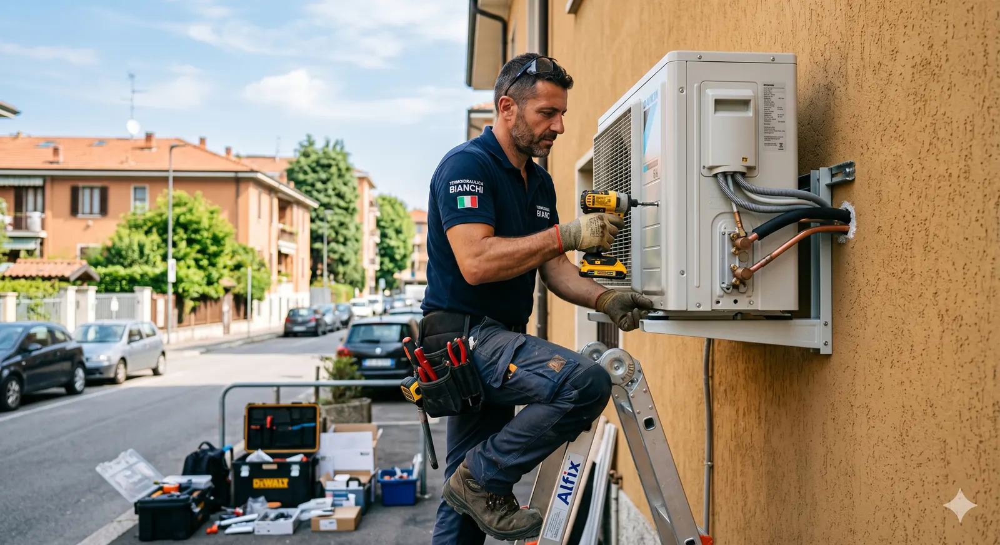
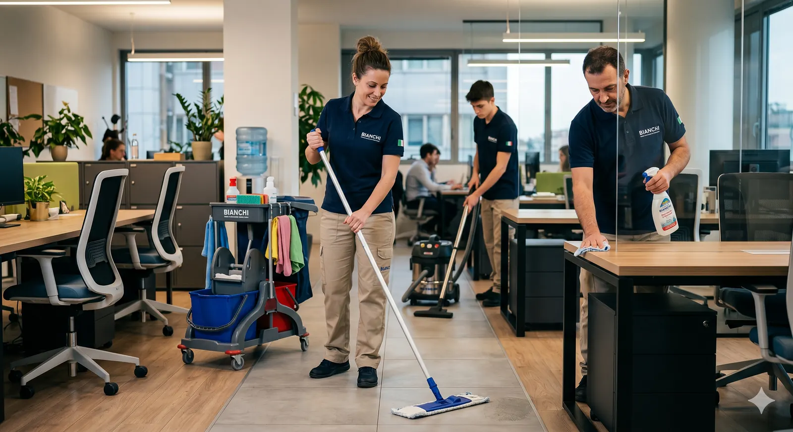
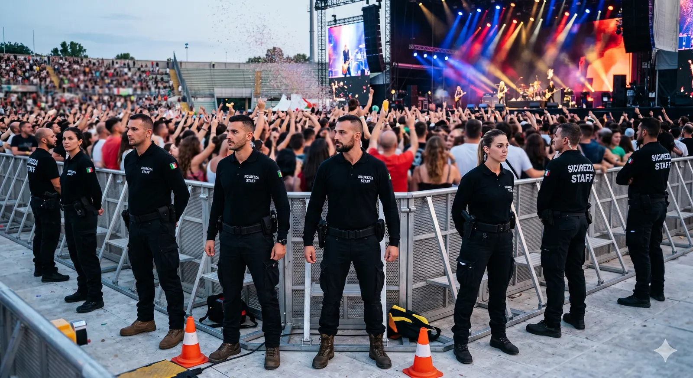
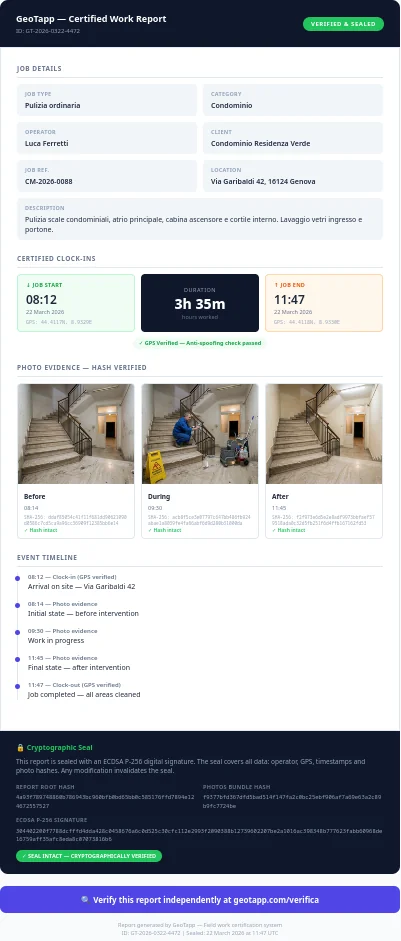
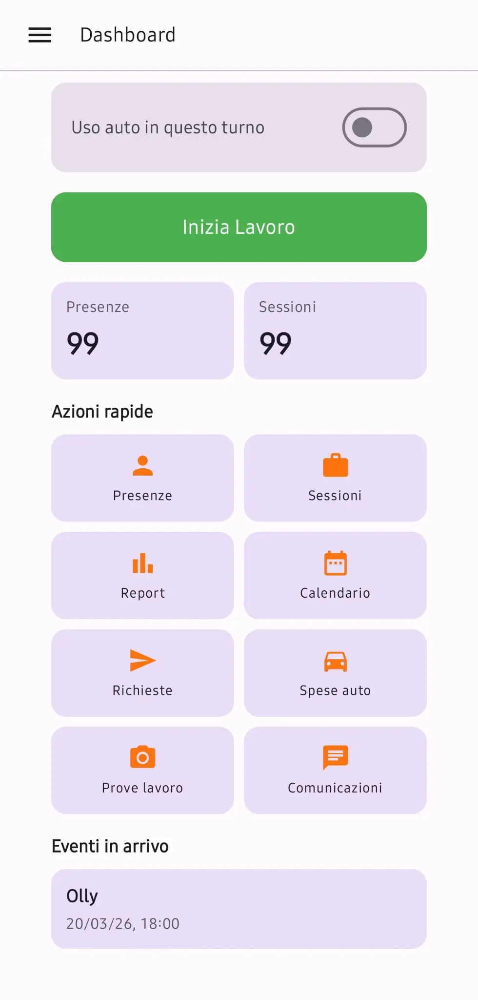
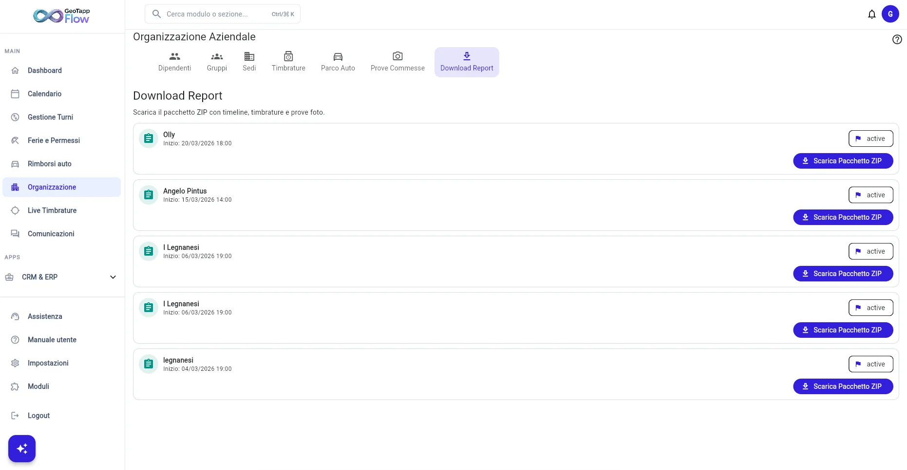

Il cliente nega. Tu non hai prove.
L'intervento c'è stato. Ma senza documentazione verificabile, è la tua parola contro la sua. E spesso vince lui.

Timbratura GPS, CRM, gestione squadre: sì, facciamo tutto questo. Ma quando il cliente contesta, gli altri ti lasciano con un foglio Excel. Noi ti diamo un report sigillato, non alterabile, verificabile da chiunque, e la discussione finisce lì.
Scorri
Timbratura GPS, CRM, gestione squadre: sì, facciamo tutto questo. Ma quando il cliente contesta, gli altri ti lasciano con un foglio Excel. Noi ti diamo un report sigillato, non alterabile, verificabile da chiunque, e la discussione finisce lì.
Tre strumenti, un solo ciclo: il campo registra, l'ufficio vede, il cliente verifica. Nessun passaggio a voce, nessun foglio da ricostruire il venerdì sera.
Presenti su


Il problema che conosci già
L'intervento c'è stato. Ma senza documentazione verificabile, è la tua parola contro la sua. E spesso vince lui.
Fogli di carta, WhatsApp, email. I dati si perdono, si alterano, si dimenticano. La ricostruzione a posteriori è costosa e inaffidabile.
Ogni ora non documentata è un'ora non pagata. Ogni intervento senza prova è un intervento che il cliente può contestare.
Scorri
La prova
Ogni report GeoTapp è generato automaticamente dai dati reali del campo.
Timbrature GPS, foto con timestamp, note operative. I dati sono bloccati: non alterabili dopo la generazione. Quando nasce un dubbio, non devi spiegare. Devi mostrare. Il risultato non è un documento da mandare al cliente. È una prova che chiude la discussione.

Il ciclo
TimeTracker registra sul campo. Flow organizza in ufficio. Verifier certifica che tutto corrisponda. Un ciclo chiuso, senza falle.
TimeTracker funziona anche offline e si sincronizza automaticamente. Ogni dato registrato sul campo è autentico, con posizione e timestamp.
La posizione viene rilevata solo all'ingresso e all'uscita. Nessun tracciamento continuo. Conforme al GDPR.
I dati del campo arrivano in Flow immediatamente. Il responsabile ha visibilità live senza dover chiamare nessuno.
Ogni report è sigillato sui dati reali di campo. Contestazione? Il dato c'è. Verificabile da chiunque. Sempre.
Il conto
Le ore in burocrazia, le contestazioni che paghi tu, il coordinamento fatto a voce. Non li senti uscire dal conto, ma escono. Mettici tre numeri e guarda quanto fa in un anno: di solito sorprende, e non in meglio.

GeoTapp TimeTracker · Campo
TimeTracker è l'app mobile che raccoglie l'evidenza dal campo: ingresso, uscita, prove fotografiche, note. Tutto collegato all'intervento, tutto sigillato. Disponibile su Android e iOS.
Scopri GeoTapp TimeTracker
GeoTapp Flow · Ufficio
Flow è il centro operativo dell'ufficio: commesse, attività, avanzamento e report strutturati. Il campo lavora. L'ufficio sa.
Scopri GeoTapp FlowGeoTapp Verifier · Cliente
Non sei tu a dire che il lavoro è stato fatto. È il report che lo dimostra. Il cliente lo verifica da solo, senza accedere a GeoTapp. Se qualcuno ha modificato il documento, non regge più. Senza appello.
Scopri GeoTapp VerifierScegli il tuo settore per vedere come GeoTapp genera prove del lavoro svolto, da mostrare al cliente in caso di contestazione.
Elettricisti, Idraulici, Impiantisti. Ogni intervento documentato con GPS e foto, dati non alterabili, verificabili dal cliente.
Dimostra ogni intervento →Imprese di pulizia, Facility, Multiservizi. Ogni passaggio documentato e verificabile dal committente, zero contestazioni.
Evita contestazioni →Vigilanza, Steward, Servizi Fiduciari. Presenze verificabili, turni documentati con prova oggettiva.
Prova presenze al cliente →Ogni intervento elettrico con GPS, foto e timestamp verificabili. Il cliente contesta? Mostri il rapportino, non discuti.
Chiudi le contestazioni →Ogni intervento idraulico con GPS, foto e timestamp verificabili. Il tuo tecnico è protetto, il tuo fatturato anche.
Mostra il rapportino →Ogni intervento su caldaie e impianti con GPS, foto e timestamp. Il cliente nega i materiali sostituiti? Mostri il rapportino.
Prova i materiali sostituiti →Chi lo usa
Marika B.Informatore Scientifico · Capterra“Applicazione intuitiva e facile da utilizzare. Tutto viene inserito in maniera ordinata ed organizzata. Valido supporto nell'organizzazione del lavoro quotidiano.”
Recensore verificatoEventi, 51-200 dipendenti · Capterra“La funzione che preferisco è la possibilità di centralizzare timbrature geografiche e note spese in un unico ambiente, eliminando perdite di tempo e malintesi sui dati.”
Luca FacchettiTrustpilot“È una buona applicazione e facile da usare.”
GeoTapp è una piattaforma SaaS italiana per la gestione del personale operativo sul campo. È composta da tre moduli: GeoTapp Flow (gestionale ufficio con CRM, turni, commesse), GeoTapp TimeTracker (app mobile Android/iOS per timbrature GPS, foto operative, rapportini) e GeoTapp Verifier (verifica integrità dei report, consultabile dal cliente finale senza accesso alla piattaforma).
Sì. GeoTapp traccia la posizione solo all'ingresso e all'uscita del turno, non in modo continuo, nel pieno rispetto del Regolamento UE 2016/679 e dell'art. 4 dello Statuto dei Lavoratori post-Jobs Act.
Sì. GeoTapp offre un trial gratuito di 14 giorni senza carta di credito richiesta, con accesso completo a tutti i moduli per testare la piattaforma con i propri dati reali.
GeoTapp ha un modello a licenze utente con prezzi trasparenti. GeoTapp TimeTracker parte da 4 €/operatore/mese. GeoTapp Verifier è incluso gratuitamente in ogni piano.
Ogni report include: timestamp di inizio e fine intervento, coordinate GPS verificate, prove fotografiche con hash crittografico, dati dell'operatore e sigillo digitale. Il report non è modificabile dopo la chiusura.
Un tap in cantiere sigilla la prova, e il report si scrive da solo, pronto per il cliente. Basta venerdì sera passati a ricostruire la settimana a memoria: quando stacchi, hai finito davvero, e la sera torna tua.